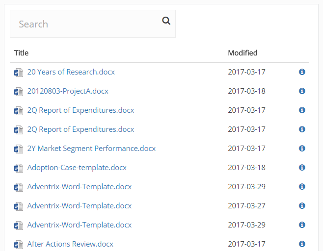
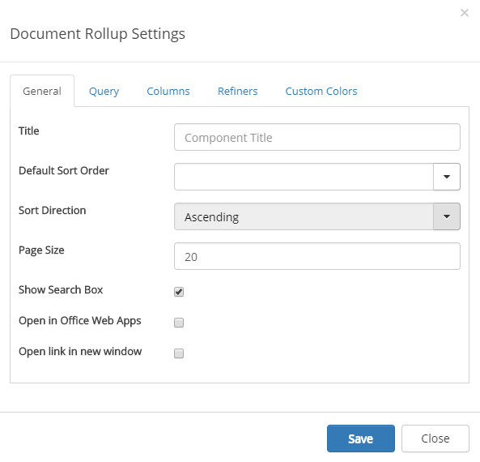
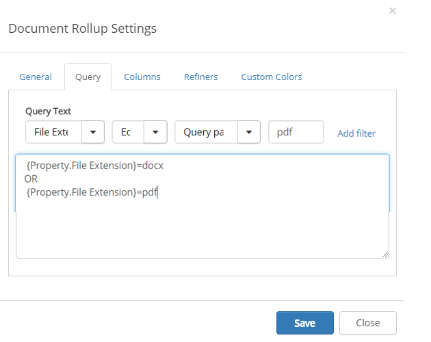
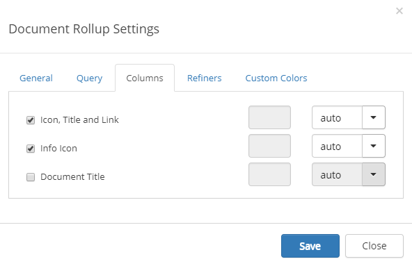
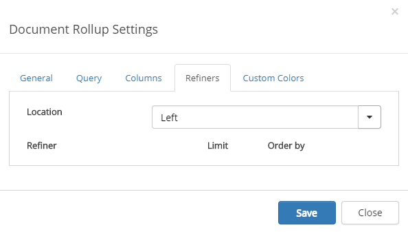
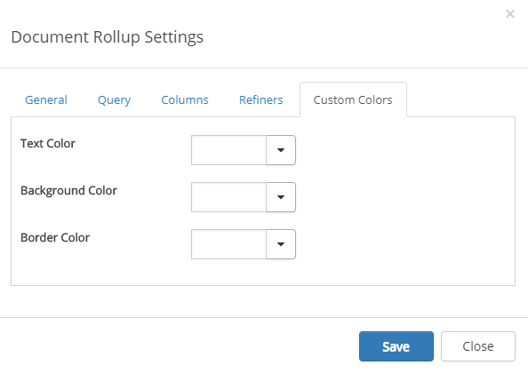

You can use this control on any page, both legacy pages and Quick Pages, and even in a group site. Use it to display selected documents available within the site. Reading permissions apply for the users regardless of the settings in the control.
Note! If Omnia Document Management is installed, and the purpose is to display Controlled Documents, don't use this control, use the "View Controlled Documents" control instead.
Here's an example of a document list created with the Document Rollup control:

To change the settings for the control, activate the Edit switch and then click the settings gear.
This will open the settings dialog.

On the General tab, the following settings are available:
Here you add queries, which is the detailed "settings" for what to display in the list, this way:
Here's an example of a query for displaying pdf:s in the list (docx already added). You can see the actual queries in the field below, which was added when clicking " Add filter".

Here you decide what to show in the list:

To the right you can choose width for each selected column: auto, as a percentage or fixed pixel width.
Here you select refiners to shor for the list:

You should primarily set colors through Theme colors in Omnia Admin (System/Settings/Default colors). If you still would like custom colors for the control, you can set them using this tab.
